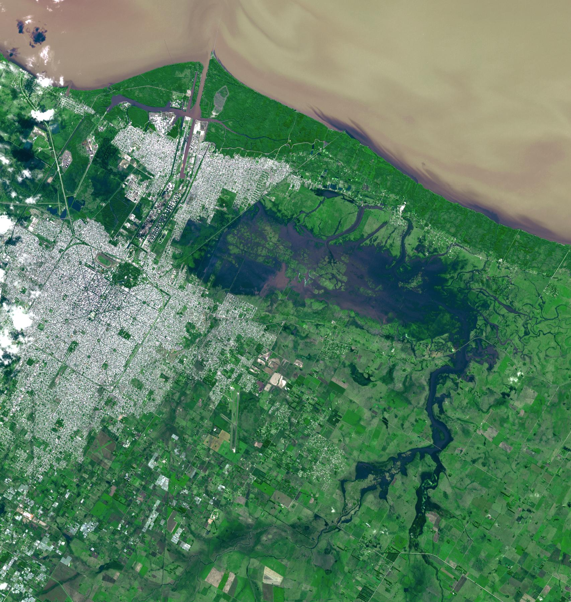
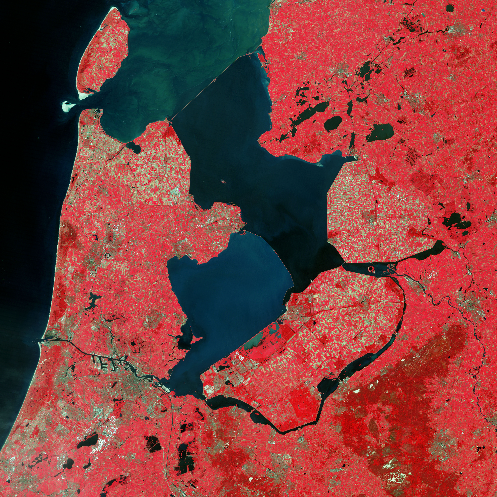

Nissim Lebovits
Home
My Work
Resume
My Work

Seminario UBA: Datos abiertos para ciudades sustentables
Para el taller, por favor hagan una copia propia de este cuaderno de Google Colab.
Jun 2, 2025
Op Ed: Use Data for Better Cleaning and Greening
In response to Mayor Cherelle Parker’s cleaning and greening initiatives in Philadelphia, I wrote an op ed in
The Philadelphia Citizen
calling on the Mayor to take a more…
Oct 22, 2024
Google Earth Engine for Urban Planning
Based on my work in Google Earth Engine for a UN-Habitat project, I gave a guest lecture to Penn’s graduate-level “deep learning applications for remote sensing” class. The…
Mar 14, 2024

Remote Sensing for Urban Planning
Based on an independent study that I did in remote sensing applications for urban planning, I gave a guest lecture to Penn’s graduate-level “deep learning applications for…
Jan 21, 2024
Clean & Green Philly
Philadelphia has a gun violence problem. Through Code for Philly, I am leading a civic tech project that will help solve this problem by empowering community groups to carry…
Jan 1, 2024
Identifying Upzoning Opportunities
For a “Public Policy Analytics” class at Penn, Laura Frances and I analyzed conflicts between anticipated and current zoning. Using a random forest model trained on historic…
Dec 22, 2023
Flood Prediction for Costa Rica
As part of a broader UN-Habitat initiative, I have been developing a methodology to predict urban flooding probabilities using open source remote sensing data and machine…
Dec 11, 2023
Wetland Change in Argentina
For an independent study in applications of remote sensing for sustainable urban planning, I used Google Earth Engine and global wetlands datasets to train a Random Forest…
Dec 4, 2023
Predicting Illegal Dumping
Illegal dumping is a major problem in Philadelphia. Especially in low-income, minority neighborhoods, illegal dumping has a significant impact on quality of life, property…
Oct 19, 2023
Identifying Vulnerable Water Suppliers
As a research assistant for Professor Allison Lassiter, I work on assessing the vulnerability of U.S. coastal drinking water suppliers to climate change. We consider…
Jan 2, 2023
Sea Level Rise Threat to Biodiversity
For a floodplain management class in my first semester at Penn, I was interested in using citizen science data from eBird to explore conflicts between biodiversity and sea…
Dec 14, 2022
Illegal Dumping Live Dashboard
To improve my R skills, I built a dashboard in R that uses
flexdashboard
to visualize illegal dumping in Philadelphia. The dashboard is interactive and allows users to…
Dec 2, 2022
No matching items